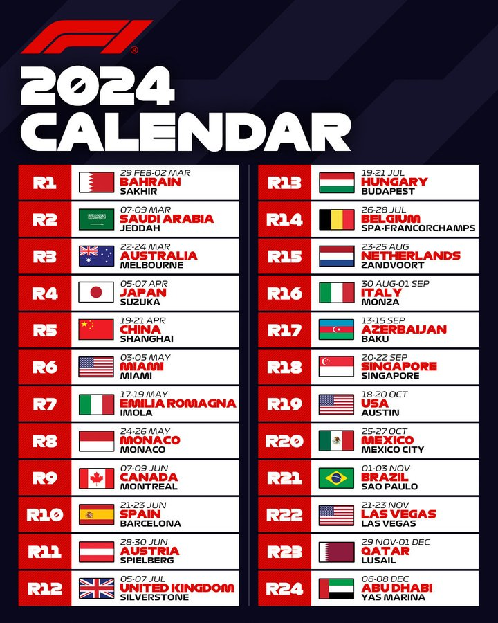
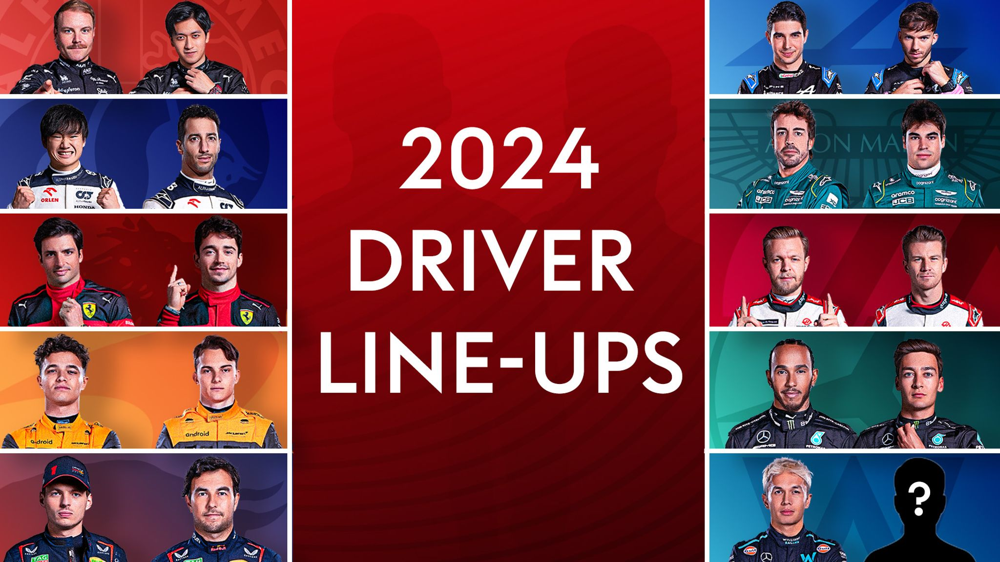

-
KALENDER F1 2024
De officiële kalender voor het wereldkampioenschap van de Formule 1 in 2024!
24 verschillende soorten circuit, met elk een andere beleving, ervaring en locaties.
Het Formule 1 gaat langs de beste locaties om het live to komen kijken. Namelijk
Italie, Oostenrijk en België. Dit zijn de beste locaties om de Formule 1 te gaan
kijken! Waarom? Kijk dan op de pagina's van de circuits. Wil jij Max Verstappen
live zien winnen? Ga dan in 2024 naar deze drie banen! -
FOMRULE 1 GRID 2024
Dit is het officiële Formule 1 veld voor het seizoen van 2024. Alle teams zitten bijna vol behalve Williams. Met Max Verstappen als Nederlander bij Red Bull Racing hebben de Nederlandse fans iets om naar te kijken live. De nieuwe generatie gaat misschien tot leven komen in 2024, Piastri, Lando, Verstappen, Albon, Russell, Leclerc. Wil jij dit Formule 1 veld voorbij jou zien scheuren, ga dan naar de beste locaties om Formule 1 te kijken live. Belgie, Spa Francorchamps. Italie, Monza. Oostenrijk, Spielberg.

{kind=link}